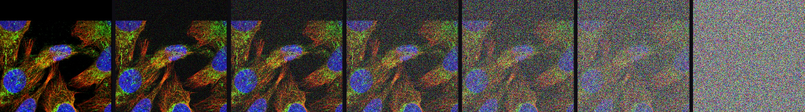
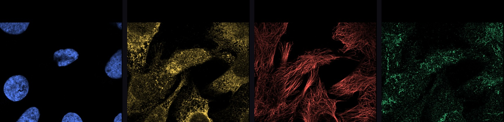
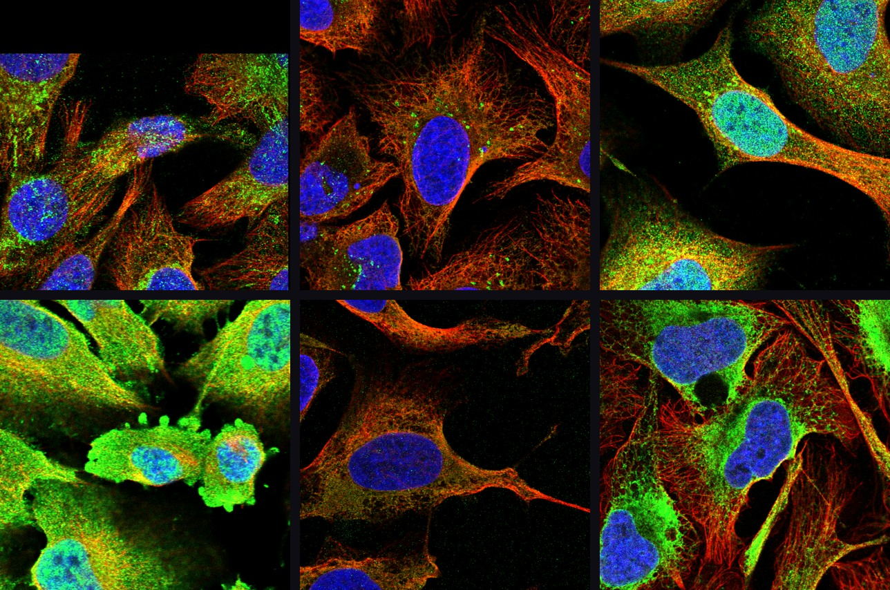

Conditional diffusion · Single-cell microscopy
A conditional diffusion model that predicts one fluorescence channel from the other three, implemented from scratch — and an apparatus for measuring whether it reproduces what real cells actually do.

A real U-2 OS cell under a cosine schedule. ACAD9, mitochondria.
01 — The task
A confocal image of a human cell carries four fluorescence channels. Three are landmarks, present in every image: the nucleus, the endoplasmic reticulum, the microtubule cytoskeleton. The fourth is the one that costs money and time — an antibody raised against one specific protein, showing where in the cell that protein sits.
Virtual staining asks a model to produce the fourth channel from the first three. Get it right and you can look at a protein you never stained.

The answer is different for every protein. Some sit in mitochondria, some in vesicles, some in nuclear speckles a micron across. A model that predicts one compartment well and the rest badly has not learned the task.

02 — The model
Nothing here is imported from a diffusion library. The noise schedules, the forward process, DDPM and DDIM sampling, EDICT and BDIA inversion, classifier-free guidance, the transformer and the UNet, the training loop and its exponential moving average — all of it is implemented directly, with tests that check the mathematics rather than the shapes.
The landmark channels condition a diffusion transformer that denoises the protein channel. Both a DiT and a UNet backbone are implemented; the conditioning path is shared.
03 — Watch it run
Everything above is easier to believe in two dimensions. Below is the repository's own noise predictor — a small multilayer perceptron — trained on a ring of eight Gaussians, then run backwards from pure noise. Nothing is precomputed by hand: this is the trajectory the trained model actually produces.
Press play
04 — Sampling and inversion
To edit an image with a diffusion model you have to run it backwards first: take a real image and recover the noise that would have produced it. The round trip has to be exact, or the edit inherits the error.
Two exact-inversion schemes were implemented and compared on the same trajectories. BDIA reaches a round-trip error of 3.8 × 10⁻¹⁷ against EDICT's 3.5 × 10⁻¹⁶, and does it in one network evaluation per step instead of two. At 200 steps neither degrades; the gap holds. Under paired initial noise BDIA reaches 7 × 10⁻¹⁸.
This one was a surprise. At γ = 0.8 the round trip closes to 1.2 × 10⁻¹⁵ — essentially exact — while the recovered latent has a standard deviation of 12.9, nowhere near the unit Gaussian the sampler expects. Invertibility and a well-behaved latent space are separate properties, and measuring the first tells you nothing about the second.
Sampling wants the terminal signal-to-noise ratio driven to zero, so the last step starts from something that really is noise. Inversion wants it kept away from zero, or the first backward step divides by almost nothing. The two requirements pull in opposite directions on the same curve. The implementation floors it at 10⁻².
05 — The atlas
Every cell in the screen was passed through a protein-localization encoder and reduced to a 1,536-dimensional vector. Projected to two dimensions, cells with the same subcellular pattern land together — without anyone telling the projection what the compartments are.
06 — Measurement
A generative model of single cells is only interesting if it reproduces how cells differ from one another. So the first question is not whether the model is good — it is whether the variation we are trying to reproduce is real. Three measurements, in order.
Per-gene localization heterogeneity decomposes exactly — by the chain rule for mutual information, not by approximation — into a within-imaging-field part and a between-field part. 83.8% of it sits between fields, and 75.5% survives a permutation null. Cells that share a field share illumination, focus, staining and segmentation; the honest target for a model is the part that is left.
The statistic had been validated by splitting a gene's cells at random and correlating the halves, which gave 1.000. But a gene's cells sit in four to six imaging fields, so a random split puts the same fields on both sides. Splitting by field instead gives 0.861, against 0.979 for a cell split at matched sample size. The ranking survives; the number in the write-up did not.
The Human Protein Atlas flags genes whose cells vary spatially. Testing our measurement against that flag looked promising until one control: how many imaging fields a gene happened to be photographed in predicts the flag at AUC 0.622 — better than any measure of how much its cells actually differ. Once that is regressed out, only the within-field component survives, at 0.595 with a confidence interval that reaches 0.500.
07 — In progress
There is no model trained on real cells on this page, because there is not one yet. Everything above is the apparatus: the implementation, the sampler, the inversion, the measurement and the data. Training at full resolution needs hardware this project has not been pointed at.
When it exists, this section becomes the results. Until then it stays empty on purpose — a generated protein channel would be easy to put here and impossible to defend.
Next